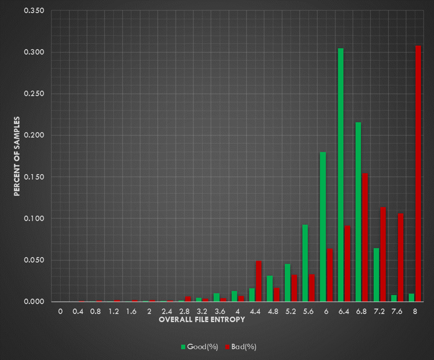
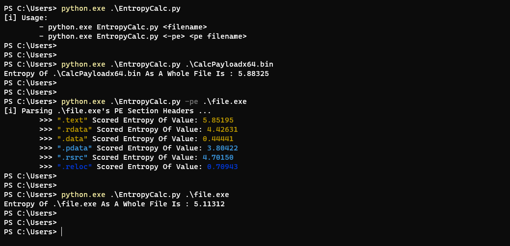
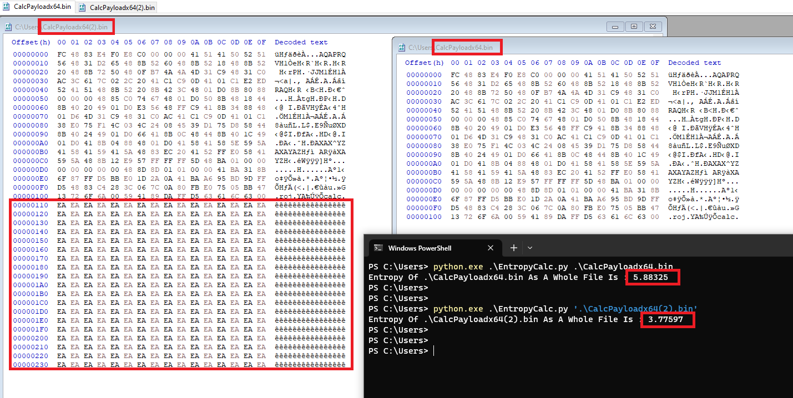
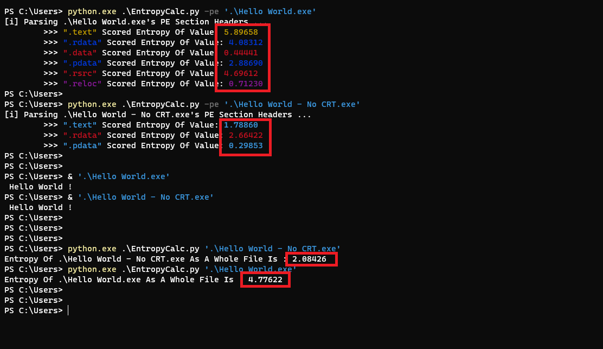

Introduction
Entropy refers to the degree of randomness within a provided data set. Various types of entropy measures exist, such as Gibbs Entropy, Boltzmann Entropy, and Rényi Entropy. However, in the context of cybersecurity, the term entropy typically refers to Shannon's Entropy, which produces a value between 0 and 8. As the level of randomness in the data set increases, so does the entropy value.
Malware binary files will generally have a higher entropy value than ordinary files. High entropy is generally an indicator of compressed, encrypted or packed data which is often used by malware to hide signatures. Compressed, encrypted, or packed data often generate a large amount of randomized output which explains why entropy is higher in malware files.
The image below compares the entropy of legitimate software and malware samples. Notice how the majority of malware files have an entropy value ranging from 7.2 and 8 whereas benign files range mostly from 5.6 and 6.8. The image is from the article Threat Hunting with File Entropy which shows how to utilize file entropy for threat hunting.

With that being said, the goal of this module is to reduce the entropy of a malicious file and place it in an acceptable range that's similar to a benign file.
Measuring a File's Entropy
To understand how to decrease a file's entropy, it's important to first understand how to calculate it. Several tools can determine the entropy of a given file such as pestudio and Sigcheck.
However, for the sake of simplicity, the code provided in this module contains a python file, EntropyCalc.py, that calculates a file's entropy. Furthermore, the Python script can compute the entropy of the PE file sections using the -pe flag.
The following image showcases the EntropyCalc.py file in action

EntropyCalc.py
EntropyCalc.py uses the calc_entropy function to calculate the entropy of the specified data, buffer. This function uses Shannon's entropy formula to compute the entropy value.
def calc_entropy(buffer):
if isinstance(buffer, str):
buffer = buffer.encode()
entropy = 0
for x in range(256):
p = (float(buffer.count(bytes([x])))) / len(buffer)
if p > 0:
entropy += - p * math.log(p, 2)
return entropyAlgorithm Selection
As previously mentioned, a malware file will have data that is often obfuscated or encoded in a way that increases its entropy. To address this issue, one solution is to modify the encryption algorithm used because some encryption algorithms generate higher entropy for their ciphertext data than others.
For example, using a single-byte XOR encryption does not change the overall entropy of the output data. The downside of the algorithm is that it's considered a weak encryption algorithm.
Another effective method to keeping entropy low is using the obfuscation algorithms explained in the beginner modules, IPv4fuscation, IPv6fuscation, Macfuscation, and UUIDfuscation instead of using encryption algorithms. These obfuscation methods output data that have a degree of organization and order. Therefore, similar byte patterns within a data set will score lower entropy values compared to that of a set of data with completely random bytes.
Inserting English Strings
Another method for reducing entropy is inserting English strings into the final implementation's code. This technique has been observed in various malware samples where a random set of English strings is inserted into the code. This works because English letters consist of only 26 characters, which means that there are only 26 * 2 (upper and lower case letters) different possibilities for every single byte saved. This is lower than the number of possibilities that encryption algorithms output (255 possibilities). If one were to use this technique, it's recommended to use either all lower case or all upper case strings to reduce the number of possibilities for every byte.
With that being said, this approach isn't recommended because the strings inserted into the implementation can then be used as signatures to later detect the malware.
Padding By Same bytes
An easier way to reduce the entropy is by padding the payload's ciphertext with the same byte repeatedly. This works because these added bytes will score an entropy of 0.00 since they are all the same.
For example, the following image shows Msfvenom's shellcode entropy drastically dropping from 5.88325 to 3.77597 after appending it with 285 bytes of 0xEA.

The downside of this approach is it increases the size of the payload. Furthermore, larger payloads will require more bytes, therefore increasing the size even more.
CRT Library Independent
The CRT, or C Runtime library, is a standard interface for the C programming language, which contains a collection of functions and macros. The functions are typically related to managing memory (e.g. memcpy), opening and closing files (e.g. fopen), and manipulating strings (e.g. strcpy).
Removing the CRT library can significantly reduce the entropy of the final implementation. Since the removal of the CRT library is discussed in an upcoming module, it is sufficient for this module to acknowledge that removing this library decreases the entropy. The following image compares two files, Hello World.exe and Hello World - No CRT.exe, where both have the same code but are compiled with and without the CRT library. Hello World - No CRT.exe scored a much lower entropy value than Hello World.exe.

Research Tool: EntropyReducer
It's also possible to reduce a payload's entropy using EntropyReducer, a tool developed by the Offensive Engineering Handbook team. EntropyReducer uses a custom algorithm that utilizes linked lists to insert null bytes between each BUFF_SIZE byte chunk of the payload.
Explaining linked lists is out of the scope of this module, however, the repository's highly documented readme and well-commented code should be sufficient to understand the tool's algorithm.